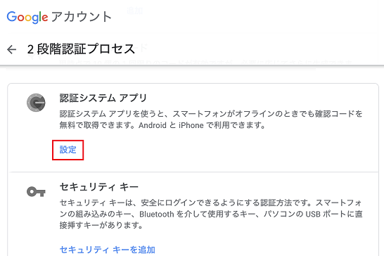
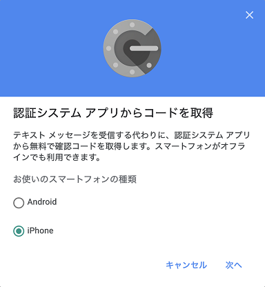
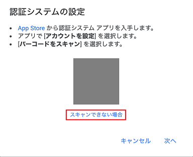
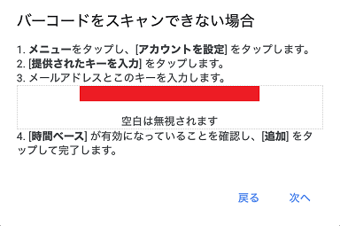
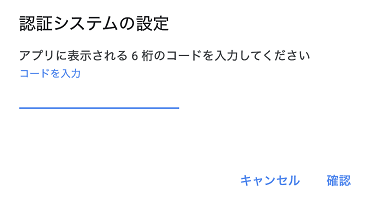
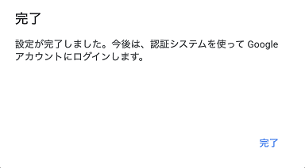

oath-toolkit で Google の二段階認証をコマンドで行う

oath-toolkit というライブラリを使うと、Google Authenticator アプリで発行されるような6桁のワンタイム・パスコードをコマンドラインから発行できるようなので、試してみた。
Mac の場合、oath-toolkit は Homebrew でインストールできる。
$ brew install oath-toolkit
MacOS High Sierra で試したところ、依存パッケージである openssl@1.1.1i の make test でハングする現象に遭遇してしまった。そこで --ignore-dependencies オプションを付けてとりあえずインストールし、brew unlink oath-toolkit && brew link oath-toolkit で誤魔化した。
$ oathtool
上のコマンドが動けば OK。
続いて、以下のページにアクセスする。
そしたら次のように操作していく。
- 「認証システム アプリ」欄 → 「設定」ボタン
- 
- 「認証システム アプリからコードを取得」ダイアログ → 「お使いのスマートフォンの種類」 → 実際に合わせて「iPhone」を選択して「次へ」ボタン
- 
- 「認証システムの設定」ダイアログ → QR コード下に表示される「スキャンできない場合」リンク
- 
- 「バーコードをスキャンできない場合」ダイアログ → 「メールアドレスとこのキーを入力します」以下の文字列をコピーする
- 
- コピーした文字列からスペースを除去して32文字の英数字に組み立て、次のようにコマンドを実行する
# 次のようにキー文字列を入力すると6桁のコードが出力される
$ oathtool --totp --base32 'xxxxxxxxxxxxxxxxxxxxxxxxxxxxxxxx'
000000
- 「バーコードをスキャンできない場合」ダイアログの「次へ」ボタンを押下する
- 「認証システムの設定」ダイアログ → 「コードを入力」に先程出力された6桁のコードを入力 → 「確認」ボタン
- 
- 「完了」ダイアログ → 「完了」ボタン
- 
ココまでできたら準備完了。以下は、先程と同じコマンドを都度叩くことで、ワンタイムパスワードがコマンドラインで発行できるようになる。
以下のようにエイリアスにしておくと、ワンタイムパスワードを発行し、クリップボードにコピーしながら画面出力できるだろう。
alias onetimepass='oathtool --totp --base32 '\''xxxxxxxxxxxxxxxxxxxxxxxxxxxxxxxx'\'' | pbcopy ; pbpaste'